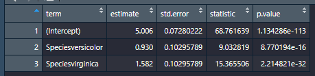
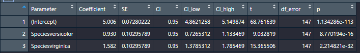
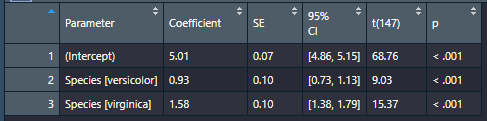

Chapter 12 Statistics and Psych-specific Stuff
12.1 Create or sample from a distribution
Creating a binomial distribution
When you do this, you are setting the true population parameter; you are in control of the Data Generating Process and the true distribution
In a binomial distribution, the parameter is normally distributed, and can take any value from 0.0 to 1.0 But the data that this process generates is not normal
rbinom(n= 1000, size= 1, prob = 0.5)## [1] 0 1 0 1 1 0 1 0 0 1 0 0 0 0 1 1 1 0 0 1 1 1 0 0 1 1 1 1 1 1 0 1 0 0 1 0 1 0 0 1 0 0 1 1 1 1 0 0 0 1 1 0 0 1 1 1 0 0 1 0 0 1 0 0 0 0 0 1 1 1 1 1 0 0 1 0 1 0 1 1 1 0 0 0
## [85] 0 0 0 0 0 0 0 1 1 0 0 1 0 1 0 1 0 0 0 0 1 0 0 0 0 1 0 1 1 0 0 0 1 0 0 1 0 0 0 0 1 0 1 1 0 1 0 0 1 0 1 0 0 1 1 1 1 0 1 1 1 1 0 0 0 0 0 0 0 0 1 0 1 1 1 1 0 0 0 1 0 1 0 0
## [169] 0 0 0 1 1 0 0 1 1 1 1 1 0 0 0 0 0 1 1 1 0 0 1 1 0 0 0 1 1 0 0 1 0 1 1 1 1 1 0 1 1 1 0 1 0 1 0 0 1 1 0 1 0 1 0 1 0 1 0 1 0 0 0 0 0 1 1 1 0 0 0 0 0 0 0 0 1 1 0 1 0 0 1 0
## [253] 1 0 1 1 1 1 0 0 0 1 1 0 0 1 1 1 0 0 1 0 0 0 1 1 1 0 1 1 0 0 0 1 1 0 1 1 0 1 0 0 1 1 1 0 0 1 0 0 0 1 0 1 1 0 1 0 1 1 1 0 0 0 1 0 0 0 1 1 1 1 1 0 1 1 1 0 0 0 0 1 0 0 0 1
## [337] 1 0 1 1 1 1 1 0 1 0 1 1 1 1 1 0 1 0 1 0 0 0 0 1 0 0 1 0 0 1 0 1 1 0 0 0 0 0 0 0 1 1 1 1 0 1 1 0 0 0 1 0 0 1 1 1 1 1 0 0 1 0 1 0 0 1 1 1 0 1 0 0 0 1 1 1 1 1 0 0 0 1 0 1
## [421] 0 0 1 0 0 0 1 1 1 0 0 0 0 0 0 1 1 0 1 0 0 1 0 1 0 1 1 0 1 1 0 1 0 1 1 1 1 0 0 1 1 1 0 1 1 1 0 1 1 0 0 1 1 1 0 0 1 0 1 0 1 1 1 1 0 1 1 1 1 1 1 1 0 1 1 0 0 0 0 1 0 0 0 0
## [505] 1 0 0 0 1 1 0 0 1 0 0 1 0 1 1 0 0 0 1 0 0 0 0 0 0 0 0 0 1 1 0 1 1 1 0 1 0 1 1 0 0 0 1 1 1 0 0 1 0 0 0 0 0 0 1 1 0 0 0 1 1 1 0 0 1 0 1 1 0 0 0 0 0 0 1 0 0 1 1 1 1 0 1 1
## [589] 0 0 0 1 0 0 0 1 0 1 1 1 1 0 1 1 1 0 0 0 0 0 0 1 0 1 0 1 1 1 0 1 1 1 0 0 0 0 1 0 0 0 1 0 1 0 1 0 0 0 0 1 1 1 1 0 0 1 0 1 1 1 1 1 1 0 1 0 0 0 0 1 1 1 1 1 1 1 1 1 0 1 1 0
## [673] 0 1 1 0 1 1 0 0 0 0 1 1 0 1 0 1 0 0 0 1 1 1 0 1 1 1 0 0 1 0 0 0 0 0 1 0 1 1 0 1 1 1 1 1 1 1 1 0 0 1 1 1 0 0 1 0 0 0 1 0 1 1 0 1 1 0 0 1 1 0 1 1 0 0 1 0 1 1 1 1 0 0 1 0
## [757] 1 0 0 0 0 0 0 0 0 0 0 1 1 1 0 0 1 1 0 0 1 1 0 1 0 0 0 0 0 1 1 1 1 0 0 0 1 0 1 1 1 0 1 0 1 0 0 1 0 1 0 0 0 0 1 0 1 1 0 0 0 1 0 1 0 0 0 0 1 1 0 1 0 0 1 1 0 1 0 1 1 0 1 0
## [841] 1 1 0 1 0 1 0 1 1 0 1 1 0 1 0 0 1 1 0 1 0 0 0 0 1 0 1 0 0 1 1 0 0 1 0 0 1 1 1 1 1 1 0 1 1 0 1 1 0 1 1 1 1 0 0 1 1 1 0 0 1 1 0 1 1 1 1 1 0 0 0 1 1 1 0 0 0 0 0 1 1 0 0 0
## [925] 0 1 1 0 1 1 1 0 1 1 0 1 1 0 1 0 1 1 1 0 1 1 0 1 1 1 0 0 0 0 0 0 1 0 0 0 0 1 1 1 0 1 1 1 0 0 0 1 1 1 1 1 1 1 1 1 1 0 0 0 0 1 1 0 0 0 1 1 1 0 0 0 0 0 1 1rnorm(n=2500,mean=500, sd=100)## [1] 690.7642 503.0016 446.5626 484.7566 514.2144 558.1073 372.0421 486.2422 445.8801 507.1753 582.8456 556.2646 505.3560 457.7520 552.2014 443.2911 516.2216 507.5774
## [19] 496.2267 700.0870 486.4038 544.2314 610.0555 490.9881 564.8317 588.5202 438.1985 365.3048 467.5639 521.1525 617.3123 554.5895 489.1160 512.8746 711.0196 692.8460
## [37] 519.8707 324.4048 441.7998 534.3156 490.2324 585.4221 430.4960 460.9629 703.4337 510.0744 519.9681 468.5821 527.3318 413.0651 460.6879 664.7801 354.3382 370.0553
## [55] 489.8274 326.0638 343.5181 669.8929 410.4743 259.5956 581.9515 479.6523 434.0253 461.1315 584.3208 423.5085 556.7683 466.5056 433.8107 588.9122 358.9104 296.3319
## [73] 490.2643 374.4722 508.8257 550.2508 413.3520 491.6750 450.5777 637.9321 418.8566 530.1711 558.6032 531.9450 422.4871 509.5001 436.4969 609.5397 390.5833 573.7023
## [91] 332.9137 355.7153 459.6057 416.6499 435.9233 393.1971 450.7034 370.8988 325.2500 560.9520 538.7495 596.3238 456.8505 378.8018 389.1940 546.0309 464.9669 437.3562
## [109] 595.2106 358.9524 488.1387 577.6982 451.5795 555.9834 455.0614 424.9773 512.1967 333.4369 349.7942 497.6879 461.4079 579.9255 570.4377 496.8774 468.6098 553.1056
## [127] 693.8511 668.4453 418.9909 571.5872 626.5654 682.8749 381.1959 380.5799 529.1706 495.0200 602.4397 488.4812 481.2003 480.3037 517.4619 430.3098 410.7283 383.9239
## [145] 507.2224 677.0574 551.9872 743.8753 447.8830 553.9661 660.0133 426.8833 378.0482 586.2658 608.6438 414.7819 467.3578 443.9643 505.8476 582.4859 515.8577 579.6892
## [163] 452.8202 320.2918 429.6083 496.7879 444.7553 546.7475 461.6923 495.1302 305.6665 481.9163 570.0053 411.7289 659.6989 319.8401 577.8611 325.9026 545.4157 460.2025
## [181] 534.0228 406.5574 532.8106 611.0717 470.5804 470.7250 399.0586 376.7103 432.2565 510.2988 501.0330 311.5054 613.5306 491.6324 592.4899 497.2093 253.9098 540.8763
## [199] 524.1655 570.1845 568.8148 649.2078 357.9979 505.1117 560.0656 488.2058 512.4326 429.8364 369.7317 562.7482 380.4301 691.9237 552.0891 642.8095 381.2714 610.1536
## [217] 393.5623 353.8832 557.3873 478.6679 677.2078 493.7744 381.9982 534.3512 519.5267 354.7870 427.7809 492.3991 527.7539 236.7285 634.5613 611.5118 573.7486 494.7876
## [235] 447.2701 450.1239 447.2279 528.8756 495.6735 432.1601 480.7788 407.7178 519.6089 533.9601 478.7551 535.1155 502.5280 342.3943 446.9967 523.1670 562.8475 462.3585
## [253] 525.2291 523.7450 532.5428 435.9035 458.1338 661.8657 463.5148 520.1895 497.6584 427.7127 590.0779 563.6812 527.4667 580.2521 450.2358 609.7054 687.3053 315.5045
## [271] 381.4677 354.9862 621.2616 445.6282 493.3062 557.0388 535.6489 391.4441 517.1641 643.9891 462.9767 456.7823 594.6212 679.8447 469.5304 585.8058 495.7101 515.8654
## [289] 585.2954 475.4714 245.2662 573.7207 571.2908 510.1705 489.8945 427.6127 381.9606 549.0644 731.1598 624.7910 351.4736 516.0527 502.4989 575.3473 508.8300 598.5068
## [307] 626.5723 394.5084 551.1109 481.5339 602.6052 490.7534 524.8933 594.8019 511.1983 451.8964 493.0614 628.4617 477.1235 576.7203 469.4596 528.6711 536.4981 466.4876
## [325] 529.7832 514.9179 594.0735 475.0174 379.3909 551.3659 416.0800 653.6031 349.7248 498.9691 603.6682 541.4988 497.6942 419.0618 461.9743 433.0824 291.6662 454.9965
## [343] 429.0149 266.4133 580.8652 417.8723 625.2045 507.4710 391.1100 654.7852 627.8170 398.9321 384.7853 501.1054 675.6450 476.3180 440.5276 509.3056 599.2357 592.1269
## [361] 651.7668 524.3816 421.1368 452.8244 529.8621 644.1803 478.4175 508.7750 595.8007 558.5413 571.2349 555.1023 559.2593 489.7140 493.0326 669.2377 469.0042 347.3663
## [379] 475.9720 421.2802 645.9101 453.0382 541.1887 411.5055 666.8346 494.7872 397.1767 497.7115 486.7867 534.5902 439.6220 480.8484 554.9179 368.8868 460.8274 489.0922
## [397] 711.1718 501.9165 418.5724 718.6710 423.1709 435.8882 532.8551 649.3885 451.9812 587.7714 516.2318 511.8405 380.5151 573.8564 462.3429 510.8129 275.7200 535.5461
## [415] 623.0225 456.8365 490.8698 594.5922 653.8893 516.6514 332.8932 612.6280 524.1005 538.2043 487.1793 524.3440 497.0323 502.0975 587.9191 448.9578 476.7128 602.9146
## [433] 469.7850 376.6824 499.8641 650.7851 615.8094 493.3007 570.9333 608.2727 559.6828 587.6076 477.4335 535.3579 459.4781 448.0090 531.2777 522.1706 543.7536 606.8745
## [451] 463.3416 491.5422 684.6416 437.6934 476.8128 499.2137 527.9584 599.6644 396.7951 477.0358 532.5132 478.9701 610.1375 570.7250 458.6793 490.3939 492.9727 548.0784
## [469] 491.5192 534.6258 592.4548 429.9015 622.2405 514.6087 482.5179 631.1590 548.9731 476.7655 550.6699 458.7896 500.6046 489.9678 521.7070 376.1594 455.4748 478.8103
## [487] 500.6990 450.0641 705.1408 493.3444 340.2326 450.3086 565.5474 510.5845 607.4647 525.2464 601.9312 393.1189 581.0030 537.7657 453.3838 318.0283 508.4975 531.2463
## [505] 373.1126 548.7601 623.4519 440.0869 652.5000 437.5633 506.5816 415.4071 516.0706 544.6454 487.4728 544.8934 566.9092 617.6771 548.2616 631.0511 473.4739 571.3268
## [523] 368.3856 501.6164 522.8763 629.5952 457.4299 527.2467 326.8235 513.6585 420.4447 447.2285 441.3478 517.2391 292.0001 494.4801 527.8838 542.8061 566.1641 578.9908
## [541] 357.2008 473.6306 677.2587 535.5803 301.3727 403.7398 414.6190 625.7101 433.4926 513.9790 290.1241 249.8849 590.1190 487.6803 571.0442 601.2068 469.5465 475.7392
## [559] 432.6426 496.2470 418.4045 303.4358 726.0839 609.2849 500.5518 578.1233 408.7615 380.4873 594.1007 499.7439 531.1113 368.6508 455.1496 609.9466 458.9388 604.4078
## [577] 402.9088 415.8239 448.0483 462.1295 522.6474 487.6938 456.0863 577.8719 340.5999 633.7612 443.4922 454.3063 610.4940 435.0683 599.6636 397.2973 374.6455 325.8588
## [595] 321.3024 482.7620 374.4408 425.1393 510.4970 531.1596 645.9354 448.5209 531.6261 348.1992 476.0654 562.8976 379.9974 532.0484 445.4427 634.4011 368.7167 672.7004
## [613] 565.7535 491.0597 731.4451 604.8716 421.3364 300.1127 440.5535 527.3207 420.5020 543.1092 499.6028 422.6449 742.7753 436.8232 530.8857 546.1302 647.6666 448.8163
## [631] 366.9691 396.1402 562.1381 741.5654 426.0017 551.1103 478.2167 600.2266 532.1149 436.3339 660.6611 354.6999 488.2334 632.6080 390.4946 389.2055 641.5392 502.8989
## [649] 586.2955 447.9865 349.9972 500.9418 283.4726 583.2403 523.0787 475.2691 539.1305 525.1959 503.8490 297.1299 485.4389 480.3741 525.1787 659.0466 519.6565 513.0671
## [667] 360.0704 637.1515 586.5342 580.8653 435.4805 624.2765 464.9148 409.2928 565.2380 556.4711 392.7148 588.4800 616.1251 523.3135 495.8529 359.6408 597.8614 557.3185
## [685] 547.4084 554.3561 469.9123 471.6370 552.7903 457.7323 509.1782 484.3411 310.7837 349.0889 469.9034 736.6610 482.3783 423.4637 607.1870 525.9129 456.5308 358.0275
## [703] 605.7850 646.5580 477.9809 377.2324 403.8891 601.9674 613.8450 408.5394 510.2801 372.3809 693.2728 609.3073 704.5412 441.4024 623.5082 511.3888 539.7074 465.6184
## [721] 663.6630 699.4078 444.3459 485.8474 463.9139 436.9269 583.1504 435.3909 584.0109 687.2442 626.6060 504.6432 497.2372 306.4394 430.5330 566.2029 441.3459 484.8510
## [739] 524.0242 440.1531 554.9754 572.8674 558.5630 621.3363 635.4167 549.3009 548.0824 469.9470 728.0815 691.3732 650.7351 311.2510 528.0012 513.0207 443.2585 495.4862
## [757] 494.3729 577.6868 511.6519 387.7507 500.9570 528.0799 392.6372 575.0573 649.4153 424.9899 445.2550 589.0665 456.6779 417.0215 494.1086 466.9487 507.0484 617.9516
## [775] 408.3503 486.6273 519.3648 367.0132 603.6742 357.5127 459.2164 414.9186 477.9580 375.7157 227.5575 447.0915 552.5945 541.2205 477.3557 511.3888 366.3676 541.8846
## [793] 641.1269 493.1544 444.6010 571.4874 507.8334 376.4408 729.4874 607.8687 453.6202 377.1565 284.5644 514.1725 582.8606 423.0604 485.5145 430.1117 616.0109 367.8656
## [811] 393.5513 450.6351 475.9432 513.4465 620.5404 560.5519 450.3671 520.9705 493.8261 507.4381 665.0495 325.3849 508.1991 343.4316 380.3415 424.6257 606.1888 579.1084
## [829] 462.3792 389.8099 490.8874 591.3056 465.1908 624.4178 423.0522 253.6473 462.7211 452.0061 365.4780 334.9249 430.0378 310.6141 587.8560 435.5059 352.7550 366.2667
## [847] 496.9301 464.1797 426.3634 524.6137 575.3314 462.3060 354.1794 577.5041 288.6520 467.3059 478.7292 635.0938 467.7270 610.1464 442.0070 583.9132 363.9433 530.5671
## [865] 549.5344 468.3479 466.9145 655.7451 512.8609 504.2036 538.2761 475.7039 458.7146 418.8669 606.1192 448.4299 387.2663 474.5578 576.6278 502.9695 509.4259 505.9550
## [883] 557.8631 606.7899 546.4254 517.9671 456.8737 534.7139 532.2812 506.9922 437.5018 354.5535 547.5040 546.1719 496.7769 594.6566 566.8912 651.1099 569.2072 399.9619
## [901] 499.5997 453.0542 503.6737 479.9079 603.6589 588.4268 480.5298 719.0702 476.4992 463.0849 515.4054 557.1812 480.2085 517.2196 429.5344 664.7642 565.2157 489.8956
## [919] 502.2124 514.0178 534.4487 468.6748 477.4474 428.4724 342.0031 591.6231 361.7524 579.8610 503.2338 531.1024 378.8424 436.3192 708.5300 524.2979 451.3790 368.0187
## [937] 343.0128 649.4367 593.2486 716.6372 566.0013 563.3512 323.0505 712.7242 283.4797 593.6304 368.4733 586.7725 402.3331 557.0522 511.9797 398.3025 623.5914 529.3349
## [955] 515.1055 495.3027 594.1564 578.8444 386.4326 402.7863 526.0448 507.9440 334.2873 398.9222 523.8656 365.6481 488.9171 459.0526 286.3321 337.5755 613.3931 478.8902
## [973] 514.2966 745.8776 475.3705 517.7410 544.9654 630.6918 565.4086 335.1642 531.3661 436.6194 427.9133 425.6029 557.2813 501.2163 547.3963 370.5879 490.5978 447.3090
## [991] 512.0111 506.0593 444.2074 446.8414 401.0092 463.4028 441.7573 460.8381 494.1673 437.6966
## [ reached getOption("max.print") -- omitted 1500 entries ]12.2 Calculating Interrater reliability
Cohen’s Kappa is useful for IRR agreement on categorical variables…Use the psych package for this see here; and read this web page for an overview of what Cohen’s Kappa is if you need a recap/intro.
For 3+ raters on a continuous variable, use Intraclass Correlation. See this page.
12.3 Statistical tests and modeling with easystats
https://easystats.github.io/easystats/
12.3.1 Getting parameter estimates from model objects
Scenario: You’ve run some statistical test (like the below regression), and want a summary of the model estimates.
rm(iris)
model <- lm(Sepal.Length ~ Species, data = iris)You have a few options when it comes to getting a summary of a model and getting the coefficient estimates:
- summary()
- broom::tidy()
- paramters::model_paramters(), or just paramters::paramters() for short
There’s no reason to use summary, generally speaking, because it sucks. It doesn’t give you tidy output that’s easy to manipulate or extract, it’s hard to read, and it can’t be turned into a useful table. Skip it unless you need something specific from it’s output (i.e., you’re using lavaan)
Options two and three are pretty similar and both give you most of the same information, though parameters() prints neater to the console window. Generally I find parameters preferable.
Note though that neither command will round the numbers if you store it as a table in the environment. So….
- If you want to manipulate ANY info in the table and/or extract info, use
tidyorparameters. Both make tidy tibbles. - If you’re using the command to export said info in a neat, presentable MS Word table or HTML table, and you do not care about extracting/modifying/manipulating anything in it, then use
parametersand pipe it toformat_table()
Using format_table() rounds all columns to 2 decimal places, reformats p-values to APA format, and collapses CI’s into a single column. Do note though that it makes every column into a Character column! So this is for exporting-use only.
Here’s a comparison of broom’s output (first) vs. parameter’s (second) when you save each in the environment. As you can see, both produce tidy tibbles


And here’s what parameters(model) |> format_table() does to the a parameters table:

Much cleaner for making a table to export to Word.
12.3.2 Getting model information and performance metrics
Again, two options here. You can use either glance from the broom package, or performance from the package of the same name. These each produce slightly different output, though unlike above, I don’t think one is necessarily better than the other. Use whichever one you prefer.
broom::glance(model)## # A tibble: 1 x 12
## r.squared adj.r.squared sigma statistic p.value df logLik AIC BIC deviance df.residual nobs
## <dbl> <dbl> <dbl> <dbl> <dbl> <dbl> <dbl> <dbl> <dbl> <dbl> <int> <int>
## 1 0.619 0.614 0.515 119. 1.67e-31 2 -112. 231. 243. 39.0 147 150performance::performance(model)## # Indices of model performance
##
## AIC | BIC | R2 | R2 (adj.) | RMSE | Sigma
## -----------------------------------------------------
## 231.452 | 243.494 | 0.619 | 0.614 | 0.510 | 0.51512.3.3 Effect size info with effectsize
logreg_model=glm(smoke ~ age + sex, data= legaldmlab::survey, family = "binomial")
logreg_model_coeff=parameters::parameters(logreg_model)
logreg_model_coeff=logreg_model_coeff |> dplyr::mutate(odds_ratio=exp(Coefficient))
effectsize::interpret_oddsratio(logreg_model_coeff$odds_ratio, rules = "chen2010")## [1] "small" "very small" "very small"
## (Rules: chen2010)12.3.4 Quick, detailed, and automated reporting with report
Check out https://easystats.github.io/report/